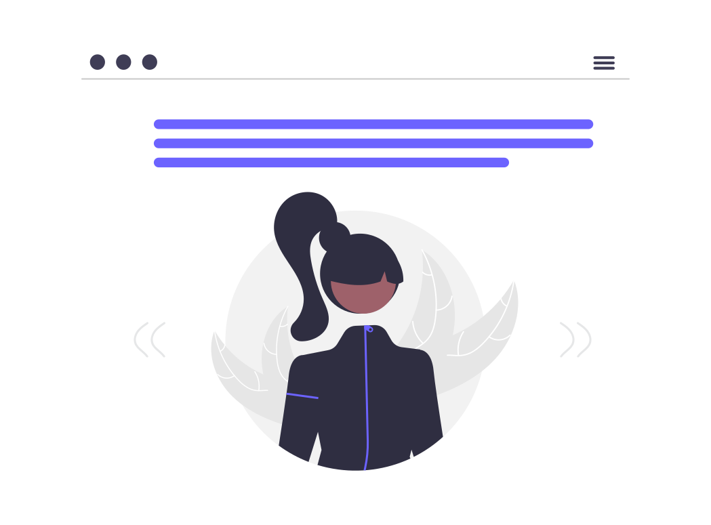

I'm Siti Fadhilah Rahmi Informatics Student from Andalas University
I'm a third-semester Informatics student at Andalas University
Available for HireThird-semester Informatics student at Andalas University
Mahasiswa Program Studi Informatika semester 3 Fakultas Teknologi Informasi Univeritas Andalas
- Birthday: 10 Maret 2006
- Phone: +62 895-3175-5420
- City: Padang, West Sumatera
- Age: 18
- Email: sitifadhilah187@gmail.com
- Freelance: Available
Aktif dalam berbagai kegiatan akademik perkuliahan serta kegiatan non akademik. Sedang belajar berbagai hal di bidang pemrograman, Artificial Intelligence, Pemrograman Web, Data Science, dan lainnya. Saya juga telah menyelesaikan beberapa project. Mempunyai minat dan ketertarikan tinggi di bidang Pemrograman dan Artificial Intelligence.
JAVA
Kalkulator
Program ini dibuat menggunakan Graphical User Interface(GUI) menggunakan bahasa Java. Program ini dapat melakukan berbagai operasi aritmetika.
See ProjectBook Management
Program ini dapat menerima input, menghapus, dan update data buku. Juga dapat melakukan pengurutan atau sorting data menggunakan metode selection sort.
See ProjectLaundry App

Aplikasi laundry ini dirancang menggunakan Pemrograman Berorientasi Objek. Sudah terhubung ke database. Dapat melakukan Create, Read, Update, dan Delete (CRUD).
See ProjectDATA SCIENCE
Sentiment Analysis

Dirancang menggunakan bahasa python menggunakan google colab. Model dibangun untuk dapat menganalisis sentiment pada postingan twitter.
See ProjectAnalisis Suhu & Kelembapan

Dibuat untuk menganalisis hubungan antara suhu dan kelembaban serta mendeteksi kemungkinan suhu beberapa waktu ke depan berdasarkan tren
See ProjectAnalisis Customer Churn
Membuat model klasifikasi menggunakan Algoritma klasifikasi, untuk memprediksi customer churn pada perusahaan telekomunikasi dengan akurasi >70%
See ProjectDESAIN WEB
Personal Portfolio
Website ini dibuat sebagai personal portfolio saya. Dibuat menggunakan bahasa pemrograman html, CSS, dan Javascript, serta dibantu oleh Bootstrap
See Project